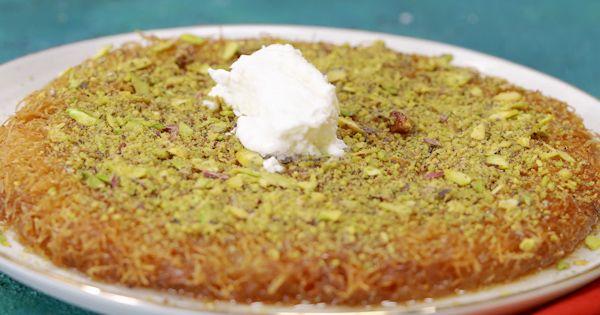

Künefe Tarifi
- Kaç Kişilik?
6
- Hazırlama Süresi
15 Dakika
- Pişirme Süresi
20 Dakika
Malzemeler

- 300 gram tel kadayıf
- 150 gram tereyağı
- 200 gram dil peyniri
Şerbeti İçin:
- 2 su bardağı toz şeker
- 2 su bardağı su
- 1 yemek kaşığı limon suyu
Nasıl Yapılır?
- Sıcak künefenin üzerine gezdireceğiniz soğumuş şerbeti hazırlamak için; toz şeker ve suyu tencereye alın.
Ocağa aldığınız şerbet karışımını aralarda karıştırarak kısık ateşte kaynatın.
- Yaklaşık 20-25 dakika kadar kaynayan ve kıvam alan şerbete limon suyu ekleyip karıştırdıktan sonra ocaktan alın
Soğuması için bir kenarda bekletin.
- Tel kadayıfı geniş bir kaba alın. Elinizle tel tel açıp küçük parçalar haline getirin. Erittiğiniz tereyağını kattıktan sonra kadayıf tellerini açmaya
devam ederek tereyağını kadayıflara yedirin.
- Pişirme işlemini gerçekleştireceğiniz küçük boy yuvarlak tepsileri ya da tavayı tereyağıyla yağlayın. Tereyağlı kadayıf karışımının yarısını pişirme
tepsisinin tabanına bastırarak döşeyin.
- Suyunu süzdürdükten sonra rendelenmiş tuzsuz Antakya peynirini kadayıfların üzerine boşluk kalmayacak şekilde serpiştirin.
- Kalan tereyağlı kadayıf karışımıyla peynirlerin üzerini bastırarak kaplayın.
- Künefe tepsilerini ocağın üzerine alın. Tepsiyi ocak üzerinde gezdirerek künefeyi kısık ateşte pişirin. Taban kısmı renk alan künefeyi, geniş bir tabak
yardımıyla ters çevirerek tekrar ocağa alın. Aynı şekilde pişirerek diğer tarafının da kızarmasını sağlayın.
- Ocaktan almak üzere olduğunuz nar gibi kızaran künefenin üzerine ılık şerbeti gezdirdikten sonra ocaktan alın.
- Kısa bir süre dinlenen ve şerbetini çeken künefeyi, dilimledikten sonra arzuya göre sıcak ya da ılık olarak sevdiklerinizle paylaşın.